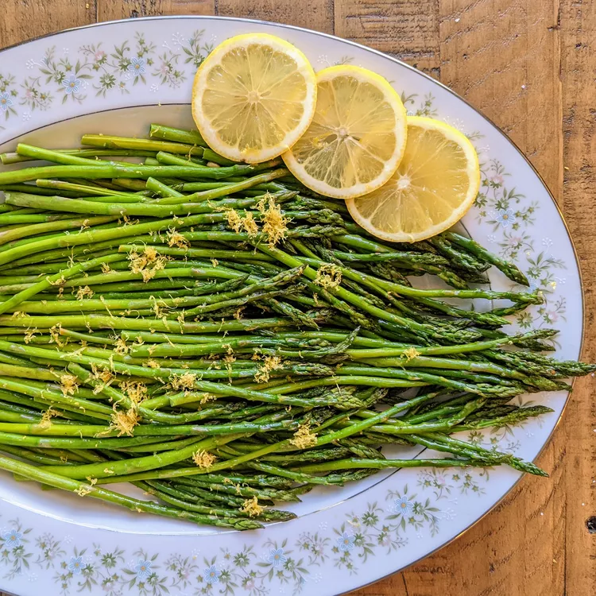

Oven-Roasted Asparagus

Photo: well cooked dish from our recipe
The quickest and easiest way to trim your asparagus is to line up all the (clean) stalks on a cutting board,
then use a sharp chef’s knife to cut off the thick ends. That’s all there is to it! If you’re worried about
cutting at the wrong place, here’s a tip from recipe creator swedishmilk: “To remove woody ends, grab a
stalk of asparagus at either end and bend until it snaps. It will naturally snap where it starts to get tough.”
Ingredients
- 1 bunch thin asparagus spears, trimmed
- 3 tablespoons olive oil
- 1 ½ tablespoons grated Parmesan cheese (Optional)
- 1 clove garlic, minced (Optional)
- 1 teaspoon sea salt
- ½ teaspoon ground black pepper
- 1 tablespoon lemon juice (Optional)
Steps
- Preheat the oven to 425 degrees F (220 degrees C).
- Place asparagus into a mixing bowl; drizzle with olive oil and toss to coat.
Sprinkle with Parmesan cheese, garlic, salt, and pepper.
Arrange asparagus in a single layer in a baking dish.
- Bake in the preheated oven until just tender, 12 to 15 minutes
depending on thickness. Sprinkle with lemon juice just before serving.